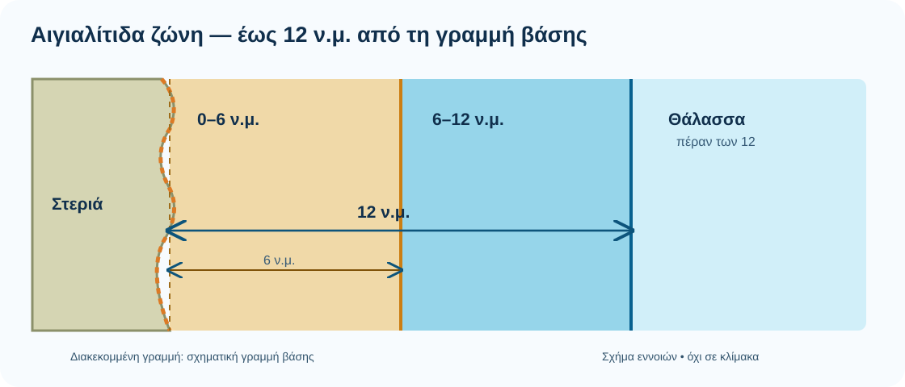
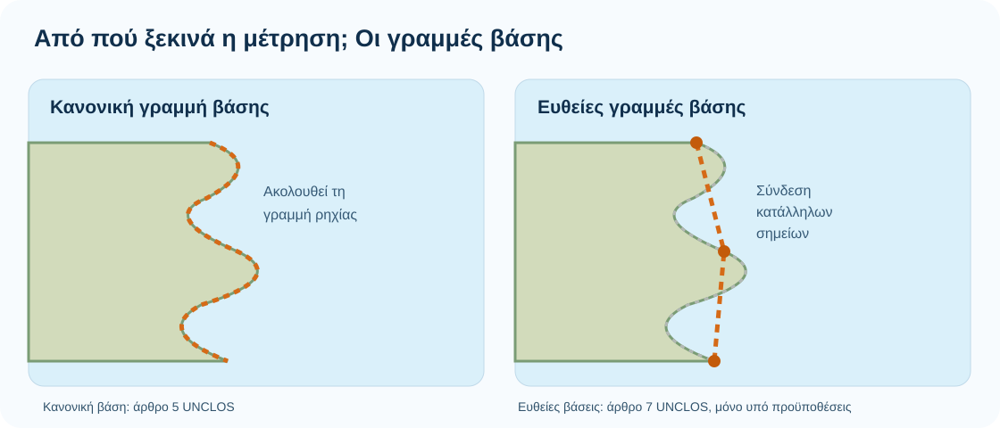
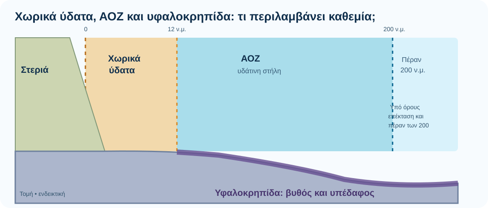
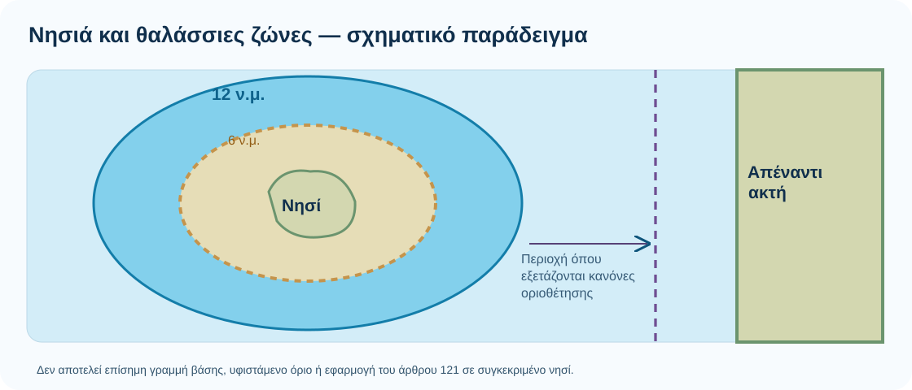

Αιγιαλίτιδα ζώνη ή χωρικά ύδατα
Η αιγιαλίτιδα ζώνη (χωρικά ύδατα) είναι η θαλάσσια περιοχή που εκτείνεται πέρα από την ξηρά και τα εσωτερικά ύδατα. Σε αυτήν το παράκτιο κράτος ασκεί κυριαρχία στη θάλασσα, στον βυθό, στο υπέδαφος και στον υπερκείμενο εναέριο χώρο, σύμφωνα με το Διεθνές Δίκαιο. Η κυριαρχία συνυπάρχει με κανόνες όπως το δικαίωμα αβλαβούς διέλευσης των ξένων πλοίων.
Το άρθρο 3 της UNCLOS αναγνωρίζει σε κάθε κράτος δικαίωμα καθορισμού εύρους έως 12 ναυτικά μίλια από τις νόμιμες γραμμές βάσης (1 ν.μ. = 1,852 χλμ.). Το 12 είναι το επιτρεπόμενο ανώτατο εύρος, όχι η αυτόματη σημερινή κατάσταση κάθε θαλάσσιας περιοχής.

Ελλάδα σήμερα: Το ελληνικό ΥΠΕΞ αναφέρει ότι το εύρος ορίστηκε γενικά στα 6 ν.μ. το 1936 και ότι η Ελλάδα επέκτεινε την αιγιαλίτιδα ζώνη στα 12 ν.μ. στο Ιόνιο, με τον νόμο 4767/2021.
Δικαίωμα επέκτασης: Η ελληνική επίσημη θέση είναι ότι το δικαίωμα για καθορισμό του εύρους έως 12 ν.μ. μπορεί να ασκηθεί μονομερώς, σύμφωνα με το Δίκαιο της Θάλασσας. Η οριοθέτηση απέναντι σε άλλα κράτη είναι διαφορετικό ζήτημα.
UNCLOS, άρθρα 2–3, 15, 17 ↗ · Ελληνικό ΥΠΕΞ — Αιγιαλίτιδα ζώνη ↗
Γραμμές βάσης: από πού μετράμε τα μίλια;
Η απόσταση δεν μετριέται γενικά «από την ακτή όπως φαίνεται στον χάρτη». Η UNCLOS καθορίζει τη γραμμή βάσης ως αφετηρία μέτρησης. Η κανονική γραμμή βάσης είναι κατά κανόνα η γραμμή ρηχίας, δηλαδή η γραμμή χαμηλής στάθμης των υδάτων, όπως αποτυπώνεται σε επίσημους ναυτικούς χάρτες μεγάλης κλίμακας.
Σε συγκεκριμένες γεωγραφικές συνθήκες —όπως ιδιαίτερα εσοχικές ακτές ή συστάδες νησιών πολύ κοντά στην ακτή— το άρθρο 7 επιτρέπει ευθείες γραμμές βάσης, με αυστηρές προϋποθέσεις. Δεν μπορούμε να ενώσουμε αυθαίρετα όλα τα ελληνικά νησιά με ευθείες.

Υφαλοκρηπίδα και Αποκλειστική Οικονομική Ζώνη (ΑΟΖ)
Οι δύο έννοιες συνδέονται με οικονομικά δικαιώματα στη θάλασσα, αλλά δεν ταυτίζονται ούτε μεταξύ τους ούτε με την κυριαρχία στα χωρικά ύδατα.
Υφαλοκρηπίδα: αφορά τον βυθό και το υπέδαφος. Το παράκτιο κράτος έχει αποκλειστικά κυριαρχικά δικαιώματα για έρευνα και εκμετάλλευση των φυσικών πόρων τους. Τα δικαιώματα επί της υφαλοκρηπίδας δεν εξαρτώνται από ρητή ανακήρυξη. Η έκτασή της μπορεί, υπό τις προϋποθέσεις του άρθρου 76, να υπερβαίνει τα 200 ν.μ.
ΑΟΖ: είναι η ζώνη πέρα από την αιγιαλίτιδα ζώνη, με ανώτατο εύρος 200 ν.μ. από τις γραμμές βάσης. Παρέχει συγκεκριμένα κυριαρχικά δικαιώματα και δικαιοδοσίες, όπως για τους ζωντανούς πόρους, την ενέργεια, την έρευνα και την προστασία του θαλάσσιου περιβάλλοντος. Δεν είναι εθνική επικράτεια.

Όταν οι δυνητικές ζώνες γειτονικών κρατών επικαλύπτονται, η οριοθέτηση ΑΟΖ και υφαλοκρηπίδας διέπεται από τα άρθρα 74 και 83 της UNCLOS, αντίστοιχα. Η δυνατότητα ύπαρξης δικαιώματος δεν συνεπάγεται ότι κάθε γραμμή που σχεδιάζουμε είναι ήδη συμφωνημένο σύνορο.
UNCLOS, άρθρα 55–57 και 74 (ΑΟΖ) ↗ · UNCLOS, άρθρα 76–78 και 83 (υφαλοκρηπίδα) ↗
Τι ισχύει για τα νησιά;
Το άρθρο 121 της UNCLOS ορίζει ότι ένα νησί είναι φυσικά σχηματισμένη έκταση ξηράς, περιβαλλόμενη από νερό, η οποία βρίσκεται πάνω από την επιφάνεια της θάλασσας κατά την πλημμυρίδα. Κατά κανόνα οι θαλάσσιες ζώνες του προσδιορίζονται σύμφωνα με τους ίδιους κανόνες που ισχύουν για τις χερσαίες περιοχές.
Υπάρχει μια ουσιώδης νομική διάκριση: οι βράχοι που δεν μπορούν να συντηρήσουν ανθρώπινη κατοίκηση ή δική τους οικονομική ζωή δεν διαθέτουν ΑΟΖ ή υφαλοκρηπίδα κατά το άρθρο 121(3), αν και μπορούν να έχουν αιγιαλίτιδα ζώνη. Το αν και πώς εφαρμόζονται οι κανόνες σε συγκεκριμένο σχηματισμό είναι χωριστό νομικό ζήτημα.

Στον διαδραστικό χάρτη του 12milia.top μπορείς να δεις υπολογιστικές ζώνες 6/12 ν.μ. και τη χαρτογραφική απεικόνιση του Marine Regions. Αυτές δεν υποκαθιστούν επίσημους κρατικούς χάρτες, γραμμές βάσης ή πράξεις οριοθέτησης.
Επίσημες πηγές και περαιτέρω ανάγνωση
- Ελληνικό ΥΠΕΞ — Αιγιαλίτιδα ζώνη / 12 ν.μ.
- ΟΗΕ — UNCLOS, Μέρος II (αιγιαλίτιδα ζώνη, γραμμές βάσης)
- ΟΗΕ — UNCLOS, Μέρος V (ΑΟΖ)
- ΟΗΕ — UNCLOS, Μέρος VI (υφαλοκρηπίδα)
- ΟΗΕ — UNCLOS, Μέρος VIII (νησιά)
- Ελληνικό ΥΠΕΞ — επίσημη ελληνική τεκμηρίωση για τα Ίμια
Όλα τα διαγράμματα δημιουργήθηκαν ειδικά για το 12milia.top και είναι σχηματικά. Δεν αναπαράγουν χάρτη του Πανεπιστημίου της Σεβίλλης και δεν απεικονίζουν αναγνωρισμένα θαλάσσια σύνορα.